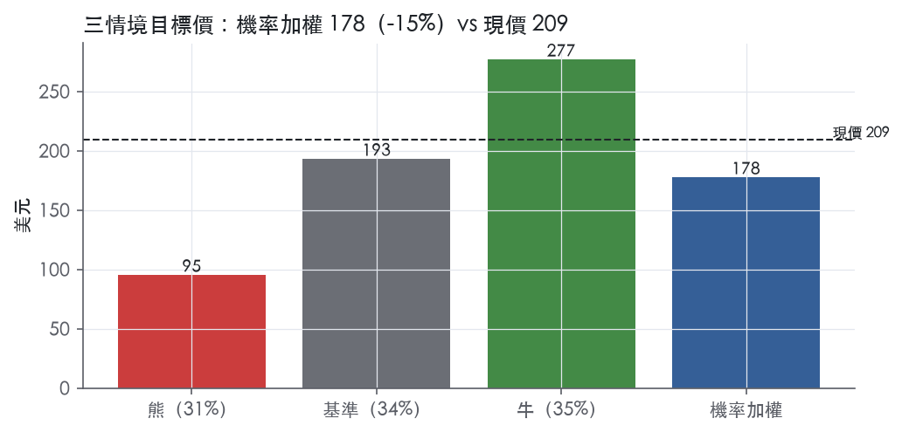
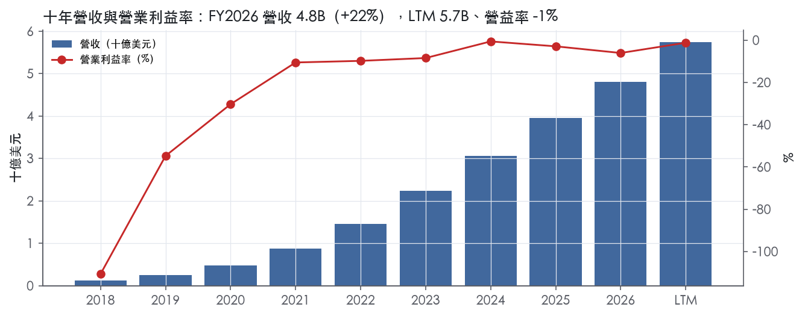
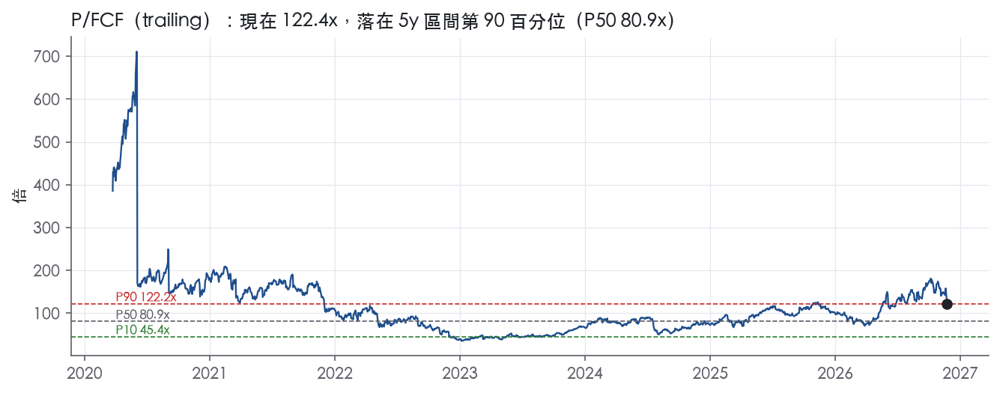
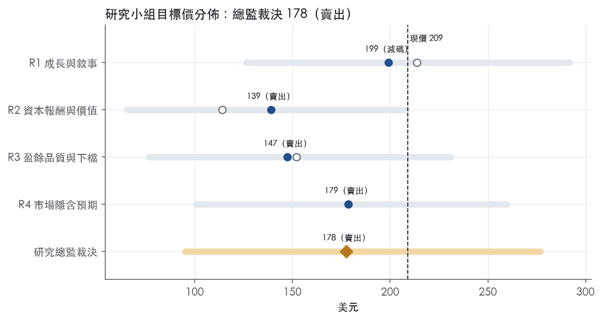
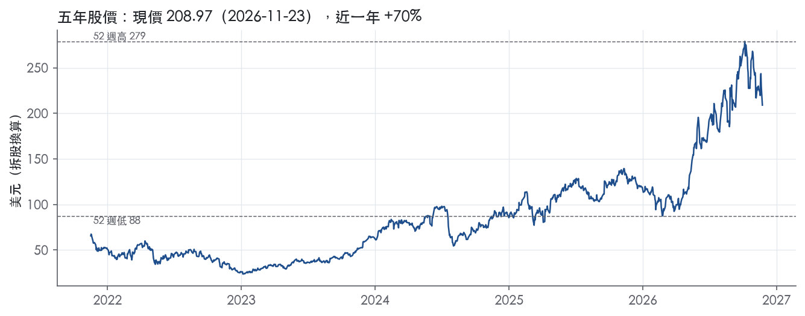

評等總表 › 資訊科技 › CRWD
成長兌現、倍數待消化：相對偏空｜評等 賣出｜目標價 178
| 報告日 | 評等 | 目標價 | 當時股價 | 超額報酬 |
|---|---|---|---|---|
| 2026-11-23 | 賣出 | 178 | 209 | -24.6% |
| 2026-10-30 | 賣出 | 177 | 250 | -38.8% |
| 快評 | 動作 | 結論 |
|---|---|---|
| 2026-11-23 | 提前重開研究小組 | 成長加速，偏空論點動搖，提前重開 |
| 評等 | 賣出 |
| 12 個月目標價 | 178 美元 |
| 現價 | 208.97 美元（2026-11-23） |
| 預期報酬 | 股價 -15.1%＋股息 0.0%＝總報酬 -15.1%；同業籃門檻 9.6%，超額 -24.6% |
| 估值方法 | P/FCF 120.0x，套在第 5–8 季的自由現金流（也就是一年後的未來四季） |
| 三情境 | 熊 95／基準 193／牛 277 |
| 研究流程 | 四位研究員兩輪辯論＋研究總監裁決 |
| 資料來源 | SEC EDGAR XBRL、Tiingo、FRED（全免費） |
成長兌現、倍數待消化：相對偏空（研究總監裁決，四位研究員兩輪辯論後）
評等 賣出｜12 個月目標價 178 美元（總監三情境機率加權 192 與研究員中位數 163 各半）｜現價 208.97（2026-11-23）
預期報酬：股價 -15.1%＋股息 0.0%＝總報酬 -15.1%。同業籃門檻 9.6%，超額 -24.6%。
估值方法：P/FCF 120.0x，套在第 5–8 季的自由現金流（也就是一年後的未來四季）。三情境：熊 95（31%）／基準 193（34%）／牛 277（35%）。
什麼會讓研究總監改變看法：2027-03 FY28 淨新增 ARR 指引年增 ≥25% 且 Zscaler 交割時程明確無附帶條件，我把倍數移到 140x、y2 上調到 24% 並轉中性；反之 FY28 淨新增 ARR 指引轉負、或 S-4 顯示 Zscaler 成長與 SBC 劣於 CRWD，熊機率上調。
| 過去四季（實際，FY2027Q3） | 未來四季 | 第 5–8 季 | 第 9–12 季 | |
|---|---|---|---|---|
| 營收（B） | 5.7B | 7.2B | 8.8B | 10.4B |
| 營收成長 | 25.9% | 26.0% | 22.0% | 18.0% |
| 營業利益率 | -1.2% | 3.0% | 6.0% | 9.0% |
| EPS（美元） | 0.10 | 0.14 | 0.36 | 0.62 |
| EPS 成長 | — | 48.9% | 151.6% | 72.9% |
| 每股股息（美元） | — | 0.00 | 0.00 | 0.00 |
| P/E（現價） | 2174.5x | 1460.4x | 580.4x | 335.7x |
| 股息殖利率（現價） | — | — | — | — |
過去四季為申報數字；預測為研究總監的假設、程式計算。倍數與殖利率都用現價計算，用來看現價對應各期獲利的高低。
| 項目 | 上次（2026-11-01） | 這次（2026-11-24） | 變動 |
|---|---|---|---|
| 評等 | 賣出 | 賣出 | ＝ |
| 機率加權目標價（美元） | 177 | 178 | +0.3% |
| 超額報酬 | -38.8% | -24.6% | +14.2 pp |
| 目標倍數 | 115x | 120x | — |
| 未來四季營收成長 | 25.0% | 26.0% | +1.0 pp |
| 未來四季營益率 | 1.0% | 3.0% | +2.0 pp |
| 未來四季 EPS（美元） | 0.03 | 0.14 | +360.9% |
| 熊／基準／牛機率 | 27／41／32 | 31／34／35 | — |
程式計算；「未來四季」各自從當次報告的資料起點算。研究總監逐點說明見第八章「與上次報告比較」。
| 情境 | 機率（歷史） | 故事 | 未來四季營收成長 | 第 5–8 季營益率 | 倍數 | 目標價 | 股價漲跌 |
|---|---|---|---|---|---|---|---|
| 熊 | 31%（28%） | 風險表第 1 條 Zscaler 整合／監管／稀釋、第 3 條淨新增 ARR 與留存反轉使 GAAP 停在 0%、第 5 條倍數壓縮；市場以接近 ZS 43.9x 的倍數看合併體，股價下跌放大 SBC 稀釋（風險章公司沒寫第 2 條） | 22.0% | 3.0% | 75.0x | 95 | -54.5% |
| 基準 | 34%（36%） | NTM 兌現 26%，FY28 面對淨新增 ARR +45% 的紀錄基期降到 22%，GAAP 薄利擴張，Zscaler 稀釋入帳，trailing 自 5y P90 往 P50–P90 中段收斂 | 26.0% | 6.0% | 120.0x | 193 | -7.6% |
| 牛 | 35%（36%） | FY28 淨新增 ARR 指引 ≥25%、Q1 FY28 淨新增 ARR 年增 >30%，Zscaler 無附帶條件交割且每股 FCF 增厚兌現，倍數不壓縮，股價回到 52 週高點一帶 | 29.0% | 9.0% | 145.0x | 277 | 32.5% |
目標價由程式依研究總監的驅動與倍數計算；機率由研究總監給定。括號內是歷史頻率：把這檔股票過去十年 12 個月報酬的波動形狀，置中在基準情境，結果落在各情境附近的比例。

四位研究員用不同方法各自估值，回應研究總監的質疑後交出第二輪，最後由總監逐點裁決。各研究員的主張見第七章，裁決理由見第八章，完整論證見《研究底稿》。
| 立場（一輪→二輪） | 加權目標價（一輪→二輪） | 評等（一輪→二輪） | 第二輪倍數 | 熊～牛目標價 | |
|---|---|---|---|---|---|
| R1 成長與敘事 | 中性→看空 | 214→199 | 減碼→減碼 | 28.0x | 126～292 |
| R2 資本報酬與價值 | 看空→看空 | 114→139 | 賣出→賣出 | 88.0x | 65～208 |
| R3 盈餘品質與下檔 | 看空→看空 | 152→147 | 賣出→賣出 | 90.0x | 76～231 |
| R4 市場隱含預期 | 看空→看空 | 179→179 | 賣出→賣出 | 105.0x | 100～260 |
| 研究總監裁決 | 看空 | 178 | 賣出 | 120.0x | 95～277 |
目標價由程式依各自的驅動與倍數計算；評等＝機率加權總報酬 − 同業籃門檻。
CrowdStrike 是一家以 AI 原生、單一輕量 sensor 為架構的雲端資安平台公司，核心賣點是用一支感測器取代多套舊式資安點產品。Founded in 2011, CrowdStrike reinvented cybersecurity for the cloud and artificial intelligence (“AI”) era and transformed the way cybersecurity is delivered and experienced by customers¹。公司把自己定位為「AI Security Cloud」這個新類別的定義者，用雲端規模的 AI 關聯每週數萬億筆資安事件，搭配威脅情資與企業資料來做即時防禦決策¹。客戶面，截至 2026 年 1 月 31 日，公司服務超過 88,000 個組織，涵蓋終端客戶與 MSSP 的客戶¹，且公司明確表示 our business is not dependent on any particular end customer¹。賣方角度看，這是一家靠「先賣進去、再往上追加模組」(land-and-expand) 的訂閱制軟體公司，營收絕大部分是 ARR 驅動。
CrowdStrike 不依傳統「事業部」切分財報，而是用單一 Falcon 平台承載 33 個雲端模組（10-K 申報當時為 32 個，現為 33 個）統包銷售，10-K 未揭露各模組或各產品線的營收占比。The Falcon platform delivered 32 cloud modules as of January 31, 2026 and currently delivers 33 cloud modules¹。平台涵蓋的主要類別包括 Endpoint Security、Cloud Security、Exposure Management、Managed Detection and Response（Falcon Complete Next-Gen MDR）、Identity Protection、Next-Generation SIEM and Log Management、Generative AI（Charlotte AI）、Securing AI（AI Detection and Response）、IT Automation、SaaS Security（Adaptive Shield）、Data Protection 與 Application Development（Falcon Foundry）¹。除平台訂閱外，公司另有專業服務收入，包括事故回應、鑑識與復原服務、技術評估與策略顧問、Next-Gen SIEM 顧問、平台部署與維運服務，以及 CrowdStrike University 的訓練與認證¹。財務結構上訂閱收入占絕大多數，Q3 FY2027 訂閱收入 1.50B 美元，占總營收 1.58B 美元的約 95%，是公司明確揭露的分項²。本季公司也揭露 Falcon Guardian（AI agent 防護模組）在推出第一年即突破 100M 美元 ARR，顯示新模組擴張速度快²。地理與產品組合高度集中於北美與歐洲企業市場，公司正往公部門、中小企業與國際市場擴張，這部分留在下一節討論。
公司客戶結構從大型企業往下滲透到中小企業，通路則靠渠道夥伴與雲端市集放大規模。Historically, we and our channel partners have primarily sold to large organizations, but have increasingly focused on selling to small and medium-sized businesses, particularly through our trial-to-pay model¹。公部門是明確的成長方向：25 of the 50 U.S. states have standardized on CrowdStrike’s platform at the enterprise level¹，且平台已取得 FedRAMP 授權與 Impact Level 5 臨時授權以滿足國防部需求¹。國際市場成長快於整體：We grew our international revenue from $1,270.7 million for fiscal 2025 to $1,595.4 million for fiscal 2026, representing an increase of 26%¹，對比公司整體 FY2026 營收成長 21.7%（dv/is 相關，對比），國際營收成長明顯快於總營收。通路方面，公司採「partner-first」策略，透過 AWS Marketplace、Google Marketplace，以及自 FY2027 起新增的 Microsoft Marketplace 銷售，另搭配 MSP、MSSP、經銷商與 GSI 網路¹。客戶擴張效率的關鍵指標是 dollar-based net retention rate，10-K 揭露為 115%（截至 2026 年 1 月 31 日）¹，顯示既有客戶持續加買模組是成長的重要來源。
過去四季 CrowdStrike 營收成長持續加速、獲利能力同步改善，且 ARR 淨增速度屢創紀錄。FY2026Q4（截至 2026-01-31）營收 1.31B 美元，年增 23.3%，GAAP 淨利翻正至 0.04B 美元（dv 相關）。FY2027Q1（截至 2026-04-30）營收 1.39B 美元，年增 25.6%，毛利率 75.3%。FY2027Q2（截至 2026-07-31，8-K 申報 2026-08-26）：Revenue was $1.47 billion, a 26% increase, compared to $1.17 billion in the second quarter of fiscal 2026³；Annual Recurring Revenue (ARR) grew 25% year-over-year to $5.84 billion as of July 31, 2026, of which $332.8 million was net new ARR added in the quarter³；公司並將 Q3 FY27 ARR 指引設在 $6,184.4 - $6,188.4 million³。FY2027Q3（截至 2026-10-31，8-K 申報 2026-11-23）為公司史上最佳單季：Delivers all-time record net new ARR of $419 million, accelerates growth to 58% year-over-year²；Total revenue was $1.58 billion, a 28% increase, compared to $1.23 billion in the third quarter of fiscal 2026²；GAAP net income attributable to CrowdStrike was $24.9 million, compared to a loss of $26.8 million in the third quarter of fiscal 2026²；Net cash generated from operations was $665.2 million ... Free cash flow was $474.4 million, compared to $295.9 million in the third quarter of fiscal 2026²。公司同時公告下一季指引：CrowdStrike is providing the following guidance for the fourth quarter of fiscal 2027 ... Total revenue | $1,638.1 - $1,644.1 million²。同一份新聞稿還宣布了對本報告最重要的結構性事件：CrowdStrike and Zscaler (Nasdaq: ZS), today announced that they have entered into a definitive agreement under which CrowdStrike will acquire Zscaler in an all-stock transaction that values Zscaler at approximately $43.9 billion²。
公司自己列出的成長策略有六項：Growing Our Customer Base by Replacing Legacy and Other Endpoint Security Products、Further Penetrating Existing Customers、Leveraging Our Falcon Platform to Enter New Markets、Broadening Our Reach into New Customer Segments、Broadening Our Reach into U.S. Public Sector Verticals、Expanding Our International Footprint，以及 Extending Our Falcon Platform and Ecosystem¹。管理層對 Zscaler 併購案的說法是把網路安全納入版圖、進入資安最大的 TAM：With today’s announced acquisition of Zscaler, we will add the network, entering security’s largest TAM as a scaled leader. Falcon is the security operating system for the agentic era²；CFO 則強調併購對每股自由現金流立即增益：we expect will be significantly and immediately accretive to free cash flow per share upon close before factoring any synergies²。公司也將 AI 代理（agentic AI）防護列為新引擎，例證是 Falcon Guardian, which secures AI agents across the enterprise, crossed $100 million in ARR in its first year following the quarter end²，並持續透過 Anthropic、OpenAI、NVIDIA、AWS 等夥伴擴大 AI 全生命週期防護布局²。判斷上，CrowdStrike 目前的敘事已從「取代傳統 EDR」轉為「AI 時代的資安作業系統」，Zscaler 併購若順利完成，將使公司從端點/身分/資料三支柱擴張到網路層，產品廣度直接對標更大型的平台型對手。這筆全股票交易規模達 43.9B 美元，遠高於 CrowdStrike 自身 LTM 營收 5.75B 美元，整合風險與股權稀釋將是後續財務分析的重點。短期基本面本身已相當強勁——ARR 連續五季加速且本季淨新增 ARR 年增 58%，顯示在不計入 Zscaler 的情況下，公司既有業務的動能也在改善。

CrowdStrike 的護城河評為「窄」，趨勢「穩定」。轉換成本與資料型網路效應都看得到具體證據，但量化底稿涵蓋的每一年 GAAP 營業利益率都是負的，帳面 ROIC 也明顯失真，我們只有把握 5 年以上 ROIC 高於資本成本，沒有把握到 10 年以上。趨勢不判為變寬，因為模組擴張與資料規模在加深護城河，但 July 19 Incident 的信任損傷和 Zscaler 全股票併購帶來的整合與資本報酬稀釋同時在抵銷。
護城河主要來自轉換成本，其次是網路效應，第三是政府授權構成的無形資產。成本優勢與效率規模證據不足，不列入。
轉換成本：單一 sensor 一旦部署，客戶加買模組的阻力很低；反過來要拆除，換掉的是整套平台，不是單一產品。Through our single lightweight sensor approach, customers can adopt multiple platform modules to address their critical areas of risk without burdening the endpoint with multiple sensors.¹ The Falcon platform delivered 32 cloud modules as of January 31, 2026 and currently delivers 33 cloud modules¹。客戶也會在平台上自建工作流程，這會進一步墊高離開成本。Our expanding set of open APIs and the Foundry app development platform allow customers and partners to build their own capabilities on top of the Falcon platform.¹ 黏著度的直接證據有兩項，一是 our 115% dollar-based net retention rate as of January 31, 2026¹，二是 25 of the 50 U.S. states have standardized on CrowdStrike’s platform at the enterprise level¹。
網路效應：公司主張資料越多、模型越準、每個客戶受益越多。The more data that is fed into our Falcon platform, the more intelligent the Security Cloud becomes, and the more our customers benefit, creating a powerful network effect that increases the overall value we provide.¹ 資料規模的依據是 our AI Security Cloud enriches and correlates trillions of cybersecurity events per week¹。我們接受這是資料型網路效應，但它屬於間接效應：客戶之間不直接互動，效益取決於偵測品質能否被客戶感受到，也取決於同樣握有大量遙測資料的大型對手能否追上，所以強度低於典型的雙邊平台。
無形資產（政府授權）：Our platform is authorized by several federal agencies via the Federal Risk and Authorization Management Program (“FedRAMP”).¹ Additionally, Department of Defense organizations can rely upon CrowdStrike’s Impact Level 5 provisional authorization to satisfy their cloud-based security requirements.¹ 這類授權取得耗時，對新進者是實質門檻，但對已取得同等授權的大型對手不構成障礙。品牌不列為獨立來源，因為公司在自己的揭露裡已把 July 19 Incident 列為風險項目，品牌目前同時是資產也是負債。
毛利率穩定和現金流支持「護城河存在」，但 GAAP 獲利與 ROIC 撐不起「寬護城河」，這是我們停在「窄」的原因。
支持的數字：毛利率最新 74.7%、十年平均 70.6%、標準差 6.5%，最低 54.1% 出現在最早期，最高 75.2%。資料包年度表中，FY2021 起毛利率都落在 73.2% 到 75.2% 之間（資料包年度表）。在價格競爭激烈的資安市場維持這個水準，代表定價權沒有被侵蝕。FCF 利潤率最新 27.2%、最高 34.7%。營業利益率從最低 -110.7% 收斂到最新一季 -0.0%（資料包 FY2027Q3），營運槓桿正在兌現。
衝突的數字：營業利益率最新 -6.1%、最高也只有 -0.6%，底稿涵蓋的每一年都沒有轉正。ROE 最新 -4.2%、十年平均 -16.3%。SBC/營收在 FY2026 為 22.8%（資料包年度表），我們判斷 FCF 與 GAAP 獲利的落差主要來自這一項，FCF 利潤率因此高估了股東實際取得的經濟報酬。
ROIC 不可用：量化底稿顯示 ROIC 最新 164.7%、十年平均 55.3%、標準差 52.0%，平均減資本成本 9.9% 後為 45.3%，有資料的 6 年中 5 年高於資本成本。但 FY2026 營業利益率為負，ROIC 卻是 164.7%，FY2024 營業利益率接近損益兩平，ROIC 反而只有 2.9%（資料包年度表）。我們判斷這是投入資本極小或為負（大量現金與遞延收入）造成的計算失真，不能拿來當超額報酬的證據，所以評級不採用這組數字。
為何不下修到「無」：毛利率穩定、淨留存 115%、營益率持續收斂，三者合併後，我們有把握未來 5 年內經濟報酬（以 FCF 扣除 SBC 的角度看）高於資本成本。
最大的侵蝕來源是平台整合戰，CrowdStrike 自己引用的產業趨勢對所有平台型對手同樣成立。Increasingly, organizations are looking to standardize on trusted platforms that deliver an immediate return on investment and lower total cost of ownership.¹ 客戶整併供應商時，轉換成本同時保護 CrowdStrike，也保護對手已經扎根的客戶。
第二是 July 19 Incident 的長尾效應，公司在前瞻聲明中列出 the effect on our customer and partner relationships and our business, results of operations and financial condition¹。sensor 的架構 uses a combination of kernel and user-mode modules¹，作業系統廠商若收緊核心層存取，單一 sensor 的效能優勢會被削弱。
第三是 Zscaler 併購。CrowdStrike will acquire Zscaler in an all-stock transaction that values Zscaler at approximately $43.9 billion²。這筆交易會讓投入資本中的商譽大幅增加，壓低未來 ROIC；整合若失敗，也會傷到「單一平台、低複雜度」這個核心賣點。
第四，資料型網路效應可以被同樣擁有大規模遙測資料的對手複製。
追蹤指標依序為：淨留存率是否跌破 115%、毛利率是否跌出 73% 到 75% 區間、Zscaler 整合後的模組交叉銷售進度。
窄護城河撐不起長期溢價，目標倍數相對資安同業應抓持平，不給溢價，超額報酬的假設期限以 5 年為上限。目前 EV/Sales 37.5x 位於 5 年帶 91.9% 分位、P/FCF 122.4x 位於 90.0% 分位，市場已經用接近寬護城河的方式定價，我們不支持再往上加倍數。Zscaler 交易完成前，估值不應預先計入綜效溢價。
| 指標 | 最新 | 十年平均 | 標準差 | 最低 | 最高 |
|---|---|---|---|---|---|
| ROIC | 164.7% | 55.3% | 52.0% | 2.9% | 164.7% |
| 毛利率 | 74.7% | 70.6% | 6.5% | 54.1% | 75.2% |
| 營業利益率 | -6.1% | -26.0% | 34.0% | -110.7% | -0.6% |
| FCF 利潤率 | 27.2% | 10.9% | 33.4% | -68.8% | 34.7% |
| ROE | -4.2% | -16.3% | 39.3% | -111.5% | 32.7% |
程式計算。資本成本代理值（10 年債＋5%）：9.9%；ROIC 平均減資本成本：45.3%；ROIC 有資料的 6 年中，高於資本成本 5 年。
CrowdStrike LTM 營業現金流／淨利 23.6x、自由現金流／淨利 18.6x，均落在綠燈區，顯示帳面淨利遠低於實際現金創造能力。真正的問題不是現金跟不上盈餘，而是反過來：GAAP 淨利因為龐大的股權薪酬（SBC）費用化而長期被壓到接近零甚至虧損，使得「淨利／現金」比值失真，必須拿 SBC／營收與利息保障兩項紅燈分開檢視才能判斷是真風險還是會計口徑問題。
現金完全跟得上、甚至遠超過報表盈餘。LTM 營業現金流／淨利 23.6x、自由現金流／淨利 18.6x 均為綠燈，應計比率 LTM -17.4%、近三年 -18.3%、十年 -22.1% 全部為負值且遠優於 ≤0% 的綠燈門檻，代表盈餘完全不是靠應計項目堆出來的。FY2026 全年 CFO 1.61B、FCF 1.31B，相對淨利 -0.16B（資料包年度表），兩者方向完全相反，差距正是來自把 SBC、折舊攤銷等非現金項目加回現金流所致。最新一季（FY2027Q3）CFO 達 665.2M、FCF 達 474.4M，均為公司歷史新高²，且應收帳款成長減營收成長僅 -1.0pp，代表營運資金沒有在吃盈餘，收款品質穩定。
GAAP 與非 GAAP 的落差主要來自股權薪酬，這塊我認為是真實成本，不該被完全忽略。Q3 FY27 GAAP 營業虧損為 0.8M，而非 GAAP 營業利益為 405.5M，兩者相差約 406M²；GAAP 淨利為 24.9M，非 GAAP 淨利為 354.9M，差距約 330M²。公司揭露的非 GAAP 調整項目包括：股權薪酬費用及相關雇主薪資稅、收購無形資產攤銷、收購相關費用（或抵減）、債務發行成本及折價攤銷、遞延薪酬負債的按市值調整、法律準備金與訴訟和解費用、July 19 Incident 相關成本（或回收）、戰略計畫相關費用（或利益）、策略性投資的損益、以及遞延薪酬資產的損益²。其中 SBC 是結構性、經常性支出，LTM SBC／營收為 23.0%，我認為這塊應該視為真實的經濟成本而非一次性項目，因為它逐年都維持在 20% 以上（近三年平均 21.9%、十年平均 18.1%），代表這不是單季異常，而是公司長期用股權換現金的商業模式。July 19 Incident 與戰略計畫費用則偏向一次性／非經常性，可以在估值上較大方地加回。
資產負債表乾淨，公司處於淨現金狀態，槓桿不是風險來源。截至最新快照，淨負債為 -4.62B（即淨現金），Q3 FY27 現金為 5.37B、總債務僅 0.75B（資料包最近八季表），顯示即使利息保障倍數紅燈觸發，實質償債壓力極低。資本配置上，公司幾乎沒有股利或回購，十年（股利＋回購）／淨利為 -1.7%，現金主要留存用於投資與併購。最重要的資本配置事件是宣布以全股票交易收購 Zscaler，交易價值約 43.9B 美元，Zscaler 股東每股可換 1.135 股 CrowdStrike 股票²；管理層表示此交易預期在未扣除協同效益前即對每股自由現金流立即增厚，並在完成後第一個財年對營收成長、非 GAAP 營益率及自由現金流率均有助益（扣除協同效益後）²。這筆交易會大幅增加稀釋股數，是對稀釋股數紅旗最直接的前瞻性加分風險。
SBC／營收紅燈（LTM 23.0%，近三年平均 21.9%）：真問題，不是一次性，是公司長期的薪酬結構，十年平均也有 18.1%，代表用股權換現金流已是常態商業模式，估值時不能完全忽略其對股東稀釋的經濟成本。
利息保障倍數紅燈（LTM -2.78x，近三年平均 -5.21x）：主要是會計口徑造成的假警報，因為分子（營業利益）本身因 SBC 費用化而為負，分母（利息費用）金額極小，而公司實際上是淨現金狀態（淨負債 -4.62B，總債務僅 0.75B，資料包）。這不是償債能力問題，是「GAAP 營業利益被 SBC 壓低」的連帶效應，真正的流動性指標應看現金與 FCF，兩者都強勁。
淨利率 FY2018→FY2019 跳動 +58pp、FY2019→FY2020 +27pp、FY2020→FY2021 +19pp（程式標註）：這是公司從創業期巨額虧損逐步走向規模經濟的正常軌跡，不是單一一次性項目，而是營收基數快速擴張（FY2019 成長 110.4%、FY2020 成長 92.7%，資料包年度表）稀釋了固定成本結構所致。
淨利率 FY2023→FY2024 跳動 +11pp（程式標註）：對應公司首次轉為 GAAP 淨利為正（FY2024 淨利 0.07B，資料包年度表），屬於規模效益持續發揮，加上同期營業利益率由 -8.5% 收斂到 -0.6%（資料包年度表），我判斷是結構性改善而非一次性損益調整。
估值應以 GAAP 盈餘為基礎再明確扣除 SBC 的經濟成本，不能直接套用管理層的非 GAAP 數字做倍數定價，因為 SBC 是經常性、會持續稀釋股東的真實支出。槓桿本身不限制倍數，公司淨現金、利息保障紅燈屬於分母失真的假警報，不應用於打折盈餘品質。真正該打折的是對 GAAP 盈餘的信賴度與未來因 Zscaler 全股票收購而來的稀釋效應，現金流與應計品質本身則支持中高品質的評等基礎。
| 項目 | LTM | 近三年 | 十年 | 燈號 | 規則 |
|---|---|---|---|---|---|
| 營業現金流／淨利 | 23.6x | -28.1x | -10.7x | 綠 | ≥1.00x 綠、<0.80x 紅 |
| 自由現金流／淨利 | 18.6x | -22.8x | -8.50x | 綠 | ≥0.90x 綠、<0.60x 紅 |
| 應計比率（(淨利−CFO)／平均總資產） | -17.4% | -18.3% | -22.1% | 綠 | ≤0.0% 綠、>5.0% 紅 |
| SBC／營收 | 23.0% | 21.9% | 18.1% | 紅 | ≤3.0% 綠、>8.0% 紅 |
| 淨負債／EBITDA | — | — | — | — | ≤1.50x 綠、>3.00x 紅 |
| 利息保障倍數（營業利益／利息） | -2.78x | -5.21x | -90.9x | 紅 | ≥8.00x 綠、<3.00x 紅 |
| 稀釋股數年變動 | 0.7% | 2.4% | 37.3% | 黃 | ≤0.0% 綠、>3.0% 紅 |
| （股利＋回購）／淨利 | — | — | -1.7% | — | ≥50.0% 綠、<0.0% 紅 |
| 應收帳款成長 − 營收成長（FY2026） | -1.0pp | — | — | 綠 | ≤5pp 綠、>15pp 紅 |
程式計算；燈號以 LTM（無則近三年平均）判定。
| 風險 | 觸發指標（看什麼數字、在哪裡看） | 對 EPS 的影響方向與粗略幅度 | 未來 12 個月發生機率（高／中／低） | 出處 |
|---|---|---|---|---|
| Zscaler 併購整合／稀釋風險 | 交易完成日、監管核准進度、增發股數是否偏離 1.135 share exchange ratio、併購後首季 non-GAAP 營益率與 FCF margin 是否達到管理層承諾 | 方向負向（股數增加稀釋 EPS），管理層聲稱「closing 前即對每股 FCF 增益」，但 non-GAAP 營益率與營收成長的增益要等「close 後首個財年」才兌現，中間有執行風險（大） | 高 | 8-K 財報新聞稿（2026-11-23） |
| July 19 Incident 延續性法律與客戶信任風險 | 相關訴訟進度、客戶 commitment package 支出、是否列入 non-GAAP 調整項（公司指引仍把「costs associated with the July 19 Incident」列為排除項） | 方向負向，影響大小不確定（10-K 只定性描述，未給具體金額）（判斷：中） | 中 | 10-K 年報 FY2026 Item 1A（風險因素） |
| 淨新增 ARR／留存率若反轉，GAAP 獲利剛轉正的脆弱性 | 每季 net new ARR（本季 419.2M，年增 58%）、dollar-based net retention rate（115%）、ARR 年增率是否持續「連續五季加速」 | 方向負向，GAAP 淨利本季僅 24.9M、EPS 0.02，基期極低，任何留存率下滑會讓 GAAP 由盈轉虧（量化底稿：=0.02） | 中 | ² |
| 競爭與產品失效聲譽風險 | 第三方評測排名（Forrester/IDC/Frost）變動、客戶流失公告、是否出現重大偵測失誤事件 | 方向負向，幅度大（判斷：大，若發生類July 19規模事件） | 低 | 10-K 年報 FY2026 Item 1A（風險因素） |
| 估值倍數壓縮風險（非業務面，但直接動 EPS 乘數） | EV/Sales 現為 37.5x，處五年 91.9% 分位，任何成長放緩都會觸發倍數回歸中樞 23.8x | 不影響 EPS 本身，但影響股價隱含倍數，方向負向、幅度大 | 中 | 量化底稿（band.ev_sales） |
Zscaler 併購是目前最大的不確定性來源。公司宣布以全股票交易收購 Zscaler，交易估值約 43.9B 美元，換股比例為每股 Zscaler 換 1.135 股 CrowdStrike 普通股²。CFO 表示這筆交易「預期在完成前即對每股自由現金流產生立即且顯著的增益」，但同時也說「預期在完成後首個財年內（扣除協同效應前）對營收成長、non-GAAP 營益率及自由現金流率產生增益」²——換言之，營益率與成長面的增益要等整合跑完才會顯現，中間這段整合期是觀察重點。CrowdStrike 自身 LTM 營收僅 5.75B 美元，要吞下一家估值 43.9B 美元的公司，股權稀釋與整合執行力是最直接會動 EPS 的變數。
July 19 Incident 延續性風險公司在風險摘要首條就寫明：「The July 19 Incident has had, and is expected to continue to have, an adverse effect on our business, sales, customer and partner relations, reputation, results of operations and financial condition.」⁴。公司在最新財報指引中仍把「costs (recoveries) associated with the July 19 Incident and related matters, net」列為 non-GAAP 排除項²，代表這筆費用至今仍在發生、尚未結案，是持續性的 GAAP 損益拖累。
ARR 動能反轉的脆弱性本季淨新增 ARR 創史上紀錄達 419.2M 美元、年增 58%，ARR 年增率連續五季加速至 27%²，dollar-based net retention rate 為 115%¹。但這些強勁數字恰好反映公司 GAAP 獲利能力仍非常薄——本季 GAAP 淨利僅 24.9M 美元、EPS 0.02 美元²，去年同期甚至是虧損（quarter的 loss of $26.8 million）²。這代表 GAAP EPS 對 ARR／留存率的邊際變化極為敏感，一旦任一季留存率或淨新增 ARR 不如預期，GAAP 損益很容易重新轉負。
競爭與產品失效聲譽風險10-K 風險摘要列出「We face intense competition and could lose market share to our competitors」以及「If our solutions fail or are perceived to fail to detect or prevent incidents...our brand and reputation would be harmed」兩條⁴。公司業務高度依賴「high-efficacy」品牌信任，July 19 Incident 已證明一次重大事件對財報的衝擊可以持續多季，這條風險的觸發指標是第三方評測機構（Forrester、IDC、Frost）的排名變動與是否再出現重大事件公告。
估值倍數壓縮不是公司 10-K 寫的風險，而是我們量化底稿觀察到的結構性問題：EV/Sales 現為 37.5x，位於五年分位數的 91.9%，顯著高於五年中樞 23.8x。這條風險不影響 EPS 本身，但只要成長或留存率數字略遜預期，倍數回歸中樞會直接壓縮股價，是賣方報告必須放進「主要風險」的第五條，因為它是「對倍數」而非「對盈餘」的風險，但同樣會動報告結論。
1.Zscaler 交易若遭反壟斷審查延遲或附加條件（例如要求拆分特定資安品類），會拉長不確定期，期間股價可能持續被交易套利邏輯主導而非基本面，10-K 與 8-K 均未揭露任何監管審查時程，需自行追蹤 HSR 申報與 FTC/DOJ 動態。 2.公司 FY27 指引中的 non-GAAP 加權平均稀釋股數已達 1,046M 股（全年）／1,056M 股（Q4），相較 FY2026 稀釋股數約 1.00B 股已明顯墊高，顯示股權稀釋在 Zscaler 交易正式計入前就已在發生，建議逐季追蹤稀釋股數成長率是否超過淨利成長率。
現價 208.97 對應 trailing（過去四季）P/E 2174.5x、EV/EBITDA —、EV/EBITA —、EV/Sales 37.5x、FCF 殖利率 0.8%。主要估值倍數 P/FCF 現在 122.4x，落在5 年區間第 90 百分位（P10／P50／P90 = 45.4x／80.9x／122.2x）。

把程式的機械基準預測放到現價下，市場付的前瞻倍數是：P/FCF（未來四季） 261.1x、P/FCF（第 5–8 季） 241.9x。反推 DCF 顯示市價隱含未來五年營收年成長 150.0%（WACC 9.0%、終值成長 3.0%、FCF 利潤率 -9.3%，SBC 不加回）。
| 倍數 | 現在 | 5 年 P10 | 5 年 P50 | 5 年 P90 | 現在分位 | 全期 P50 |
|---|---|---|---|---|---|---|
| P/E | 2174.5x | — | — | — | — | 849.3x |
| EV/EBITA | 52456.2x | — | — | — | — | 3018.7x |
| EV/EBIT | 2432.1x | — | — | — | — | 2429.9x |
| EV/Sales | 37.5x | 13.4x | 23.8x | 35.6x | 91.9% | 25.8x |
| P/S | 38.3x | 14.3x | 24.7x | 36.4x | 91.9% | 26.1x |
| P/FCF | 122.4x | 45.4x | 80.9x | 122.2x | 90.0% | 93.8x |
trailing 倍數（股價 ÷ 過去四季）；分位以每個交易日計算。
同業籃：PANW, FTNT, ZS, NET, S（手動名單（playbooks/peers.yaml））。評等門檻 9.6%：同業「倍數不變下持有一年」的隱含報酬中位數（＝ FCF 殖利率 ×(1＋g)＋g，g 為 5 年營收年複合成長並夾在 −2%～8%），每家夾在 0～15%、P/E 低於 5 倍視為資料可疑而排除，中位數再限制在 10 年債到 10 年債＋5% 之間。
| 代號 | 市值 | 5 年營收 CAGR | 營益率 | ROIC | P/E | 5 年 P/E 中位數 | EV/EBITDA | P/FCF | 隱含報酬 |
|---|---|---|---|---|---|---|---|---|---|
| CRWD | 219.9B | 40.6% | -1.2% | 164.7% | 2174.5x | — | — | 122.4x | 8.9% |
| PANW | 289.5B | 22.0% | 3.9% | 3.1% | 598.1x | — | 179.6x | 67.8x | 9.6% |
| FTNT | 96.3B | 21.3% | 33.0% | -518.6% | 42.8x | 47.9x | 33.7x | 28.1x | 11.8% |
| ZS | 37.4B | 37.9% | -4.0% | — | — | — | — | 43.9x | 10.5% |
| NET | 104.0B | 38.1% | -14.1% | 12.0% | — | — | — | 289.2x | 8.4% |
| S | 8.4B | 60.8% | -29.5% | -36.6% | — | — | — | 147.9x | 8.7% |
| 同業中位數 | 37.9% | -4.0% | -16.8% | 320.5x | 47.9x | 106.6x | 67.8x | 9.6% |
全部 trailing，程式以各公司 SEC XBRL 與 Tiingo 行情計算；第一列為本檔。
事後實現前瞻倍數帶（P/FCF，2019-07-25..2025-12-18）：P10／P50／P90 = 29.0x／61.5x／94.5x。它是每個交易日的股價除以之後四季實際實現的指標；一年後，今天的第 5–8 季正是那時的未來四季，所以這條帶是 12 個月目標價的同口徑倍數。因為用的是事後實際而非當時預期，過去成長超乎預期的公司這條帶會偏低。
程式的機械基準（成長率從過去四季年增率三年收斂到 6%、利潤率持平）用 事後實現前瞻 P/FCF P50 估值得到 53（-74.6%），市場現行前瞻倍數（現價 ÷ 基準 未來四季指標）一年後持平，套在基準 第 5–8 季指標得到 216。這兩個數字只是參考點，不是本報告的目標價；研究員對這個定價的回應在第七章。
下表是每位研究員第一輪（各自獨立）與第二輪（回應研究總監的質疑後）的結果。目標價全由程式依各自的假設計算。
| 立場（一輪→二輪） | 加權目標價（一輪→二輪） | 評等（一輪→二輪） | 第二輪倍數 | 熊～牛目標價 | |
|---|---|---|---|---|---|
| R1 成長與敘事 | 中性→看空 | 214→199 | 減碼→減碼 | 28.0x | 126～292 |
| R2 資本報酬與價值 | 看空→看空 | 114→139 | 賣出→賣出 | 88.0x | 65～208 |
| R3 盈餘品質與下檔 | 看空→看空 | 152→147 | 賣出→賣出 | 90.0x | 76～231 |
| R4 市場隱含預期 | 看空→看空 | 179→179 | 賣出→賣出 | 105.0x | 100～260 |
| 研究總監裁決 | 看空 | 178 | 賣出 | 120.0x | 95～277 |
目標價由程式依各自的驅動與倍數計算；評等＝機率加權總報酬 − 同業籃門檻。
分歧度：第一輪 加權目標價 114～214（區間＝現價的 48%）· 倍數 32～105x · 立場 中性×1、看空×3；第二輪 加權目標價 139～199（區間＝現價的 29%）· 倍數 28～105x · 立場 看空×4（方向一致）。

| 研究員 | 第二輪主張 | 堅持的理由 |
|---|---|---|
| R1 成長與敘事 | 相對減碼；營收倍數 28x，定在五年區間中位數與高檔之間。 | 他堅持用營收倍數，因為模型現金流不含營運資金，和申報數字口徑不一致。 |
| R2 資本報酬與價值 | 看空；自由現金流倍數 88x，錨在三年中位數。 | 他把第二年成長留在 18%，延續成長由 36.3% 降到 21.7% 的趨勢。 |
| R3 盈餘品質與下檔 | 看空；自由現金流倍數 90x，申報口徑定在中位數，不給溢價。 | 他認為收購 Zscaler 的增厚是倍數差，不是綜效，不給溢價。 |
| R4 市場隱含預期 | 偏空；自由現金流倍數 105x，略高於七年來前瞻倍數的高檔。 | 他認為下行全來自倍數壓縮，賭市場會下修第三年後的成長延續期。 |
每位研究員的逐條回應與完整論證見《研究底稿》（CRWD_研究底稿_2026-11-24.docx）。
| 分歧點 | R1 | R2 | R3 | R4 | 什麼資料會分出勝負 |
|---|---|---|---|---|---|
| ① Q5–Q8 營收成長（rev_growth_y2） | 21% | 18%，外推 FY24–26 降檔 | 21% | 22%，ARR 五季加速 | 2027-03 FY28 淨新增 ARR 指引；2027-06 FY28Q1 淨新增 ARR 年增 |
| ② 營益率路徑（op_margin_y2） | 5% | 3% | 5% | 6% | FY28Q1 GAAP 營益率（季節最弱季）；FY27 10-K SBC/營收 |
| ③ 主尺與目標倍數 | 28x sales@ntm | 88x fcf@ntm（3y P50） | 90x fcf@q5_q8（事後帶 P50＋分母差） | 105x fcf@q5_q8（自述 P90 略上） | 一年後 trailing P/FCF 落點；FY28 指引 |
| ④ 模型 FCF 不含營運資金的分母差 | 改用 sales 迴避 | capex 設 0% 當代理 | 留 8.5%，倍數上調約 1.46 倍 | 留 8.5%，倍數小幅上調 | 10-K 遞延收入／RPO 序列；CFO 對淨利差距走勢 |
| ⑤ Zscaler 怎麼進估值 | 只放熊（換股偏離、監管） | 不入基準，熊計稀釋 | 倍數套利、熊限定、不給綜效 | 拉低合併體倍數；牛沿用 CRWD 倍數 | S-4 揭露 ZS 單獨成長與 SBC；HSR／監管時程；交割日 |
① 選 R4（22%）。 期末 ARR 6.26B 年增 27%、連五季加速；淨新增 ARR 419.2M 年增 58%；FY27 淨新增 ARR 指引上調 1,060bp 至 45%；Q4 期末 ARR 指引 6,712.2–6,716.2M²。訂閱營收落後 ARR 一到數季，y1 大半與 y2 前段已由簿上 ARR 支撐。R2 的 18% 外推 FY2024→FY2026 的 36.3%→21.7%（年度表），但最近八季年增已從 19.8% 走到 28.3%（→FY2027Q3），方向相反；R2 營收紀錄勝過基準僅 55%，四人最低。本部所有人營收誤差中位數皆為負（預測偏低），風險偏上；不上調到上次預設的 24%，因第二個條件（FY28 淨新增 ARR 指引 ≥25%）2027-03 才揭曉。
② 選 R4（3%／6%／9%）。 GAAP 營益率由 -10.8%走到 -0.0%；非 GAAP 營業利益 264.6M→405.5M，Q4 指引 438.1–441.5M²。SBC 仍放 23%（FY2024 21.2%→FY2026 22.8%，年度表），擴張全靠非 GAAP 槓桿，不靠 SBC 下降。R4 營業利益誤差中位數 -0.4%、勝過基準 72%，最不偏；R2 -4.5% 系統性偏低，其 1%／3%／5% 退回。
③ own：120x，fcf@q5_q8。 四把倍數的差距大半是分母口徑，不是看法。R2 的 capex 0% 只補了一部分營運資金——他的 NTM 模型 FCF 仍約等於 LTM 申報 1.80B，等於營收成長 25% 下 FCF 零成長——分母仍低估，再套 3y P50 88.0x 是雙重折價，退回。R3 與 R4 方法一致（留 capex、用倍數吸收分母差），差在定位。分母差是大項：基準 NTM 模型 FCF 0.88B 對申報 1.80B（R3 量化）、FY2026 CFO 1.61B 對淨利 -0.16B（年度表）。我假設模型 FCF 約為申報的六到七成（假設），事後實現前瞻帶就要以模型口徑讀：P50 61.5x≈90x（R3）、P90 94.5x≈135–140x（假設）。R4 的 105x 自述「P90 略上」，實際約在 P75 73.6x 附近。我定位 P75–P90 之間：高於 P50，因 Rule of 40 居籃首（R1；年增 28.3%、FCF 利潤率 27.2%，護城河章）、五季加速、GAAP 轉正；低於 P90，因護城河窄（護城河章）、SBC 上升、Zscaler 把 43.9x（同業表 ZS P/FCF）的資產混入並稀釋。120x 低於市場持平參考（基準驅動 249.5x→216）、也低於現價隱含（R4：現價落在其 105x→171.77 與 135x→259.65 之間），理由全是個股因素。
④ 選 R3 的方法與量級。 R2 的 capex 0% 已撞程式下限，無法校準，且讓資本支出這個品質變數（D&A 僅約 2%、資本支出 8.5%，R3 第 4 點）消失。R3 把分母差放在倍數、三情境一致縮放，可以逐季用 10-K 遞延收入檢驗。
⑤ own。 基準維持單獨口徑；Zscaler 透過兩處進來：倍數上限壓在 P90 之下（第③點），以及情境。接受 R3「立即增厚每股 FCF 主要是 122.4x 買 43.9x 的倍數差，不是綜效」，基準不給綜效溢價（護城河章）。R4「合併體沿用 CRWD 倍數」只放牛情境；R1／R2 的監管與稀釋機制放熊，對應風險表第 1 條。
漂移與總經偏離。 R2 加權 +21.9%、向中位數靠攏 39%，但五項修正全對應我第一輪意見與新轉發證據（Q4 指引、稀釋股數 1,046M／1,056M），不列退回；R1、R3、R4 無靠攏旗標。退回清單為空。總經偏離四人皆為空；R2 已刪除利率雙重計算（V2），R1 明述下修不依賴利率；本行 10 年期 4.98 不變、敏感度 t=-0.1，不作任何倍數理由。
差在倍數不在盈餘：我們未來兩年的驅動高於機械基準，且與現價隱含的路徑接近（R4：現價落在其基準與牛之間）。市場假設單獨 CRWD 的 5y P90 溢價可原封帶進合併體；我們認為 43.9x 資產的混入與稀釋、FY28 的紀錄基期，會讓 trailing P/FCF 一年內壓縮。立場相對偏空，評等由程式決定——加權總報酬低於 9.6% 門檻即一致；上檔風險真實，我們自設的轉中性條件已達成一半。
現價 208.97 → 點估目標價 193 → 機率加權目標價 192 → 目標價 178，差距拆成五段：成長順延 +7 美元（市場現行倍數 249.5x 一年後持平、獲利照機械基準）；倍數差 -112 美元（總監倍數 120.0x vs 市場持平倍數 249.5x，同一機械基準預測）；盈餘差 +89 美元（總監預測的第 5–8 季自由現金流 1.9B vs 機械基準 1.0B，同一倍數）；情境不對稱 -1 美元（機率加權減點估）；研究小組平均 -14 美元（總監機率加權 192 與研究員第二輪中位數 163 各半）。各段相加等於目標價減現價。本階段未接賣方共識，差距以市場隱含預期為對照。
| 驅動 | 機械基準 | 研究總監 | 差異 |
|---|---|---|---|
| 未來四季營收成長 | 19.2% | 26.0% | +6.8 pp |
| 第 5–8 季營收成長 | 12.6% | 22.0% | +9.4 pp |
| 第 9–12 季營收成長 | 6.0% | 18.0% | +12.0 pp |
| 未來四季營益率 | -1.2% | 3.0% | +4.2 pp |
| 第 5–8 季營益率 | -1.2% | 6.0% | +7.2 pp |
| 第 9–12 季營益率 | -1.2% | 9.0% | +10.2 pp |
| D&A／營收 | 0.0% | 2.0% | +2.0 pp |
| 資本支出／營收 | 8.5% | 8.5% | ＝ |
| SBC／營收 | 23.0% | 23.0% | ＝ |
| 稅率 | 30.0% | 21.0% | -9.0 pp |
| 股數年變動 | 4.7% | 4.7% | ＝ |
研究總監只寫偏移，未寫的沿用基準。
| 期 | 營收 | 成長 | 營益率 | 營業利益 | EBITDA | EBITA | 淨利 | EPS | FCF | 期末淨負債 |
|---|---|---|---|---|---|---|---|---|---|---|
| 未來四季 | 7.2B | 26.0% | 3.0% | 0.2B | 0.4B | 0.2B | 0.2B | 0.14 | 1.3B | -6.0B |
| 第 5–8 季 | 8.8B | 22.0% | 6.0% | 0.5B | 0.7B | 0.5B | 0.4B | 0.36 | 1.9B | -7.8B |
| 第 9–12 季 | 10.4B | 18.0% | 9.0% | 0.9B | 1.1B | 0.9B | 0.7B | 0.62 | 2.4B | -10.3B |
程式依上表的驅動計算；季度用最近四季季節性分攤；不含營運資金變動。
估值方法：P/FCF 120.0x，套在第 5–8 季的自由現金流（也就是一年後的未來四季）。研究總監目標倍數的錨：事後實現前瞻 P/FCF 帶 P75 73.6x–P90 94.5x 之間，以模型口徑讀（假設模型 FCF 為申報六到七成，120x 約對應申報 75–85x）；高於 P50 因 Rule of 40 居籃首、五季加速、GAAP 轉正，低於 P90 因窄護城河、SBC 23% 上升、Zscaler 混入 43.9x 資產與稀釋；低於市場持平 249.5x 的理由全為個股因素。
計算：自由現金流（第 5–8 季） 1.9B × 120.0x＝權益價值 222.5B，除以第 5–8 季的股數 → 點估目標價 193（-7.6%）；隱含 P/E（未來四季）1348.8x、P/E（第 5–8 季）536.1x、EV/EBITDA（第 5–8 季）306.4x、FCF 殖利率（第 5–8 季）0.8%。
總監三情境機率加權目標價 192，研究員第二輪中位數 163，兩者各半＝目標價 178；預期報酬 股價 -15.1%＋股息 0.0%＝總報酬 -15.1%；減評等門檻 9.6%（同業籃隱含報酬中位數（PANW, FTNT, ZS, NET, S））＝超額報酬 -24.6% → 評等 賣出（超額 >+15% 買進、+5～+15% 加碼、±5% 中立、−5～−15% 減碼、<−15% 賣出）。同一份資料重開研究小組，超額約有正負四個百分點的雜訊（一個標準差，二十檔實測）；以此估計，評等落在其他級距的機率不到一成。
| 情境 | 機率 | 未來四季成長 | 第 5–8 季成長 | 第 5–8 季營益率 | 自由現金流（第 5–8 季） | 倍數 | 目標價 |
|---|---|---|---|---|---|---|---|
| 熊 | 31% | 22.0% | 15.0% | 3.0% | 1.5B | 75.0x | 95 |
| 基準 | 34% | 26.0% | 22.0% | 6.0% | 1.9B | 120.0x | 193 |
| 牛 | 35% | 29.0% | 27.0% | 9.0% | 2.2B | 145.0x | 277 |
| 主張 | 驗證日 | 看哪個數字 | 門檻 |
|---|---|---|---|
| FY2028 全年營收指引中位數年增不低於 23%（不含 Zscaler） | 2027-03-15 | FY2028 營收指引中位數年增率 | >= 23% |
| FY2028 淨新增 ARR 指引仍為正成長 | 2027-03-15 | FY2028 淨新增 ARR 指引年增率 | >= 10% |
| 季節最弱的 FY2028Q1 GAAP 營益率維持正值 | 2027-06-15 | GAAP 營業利益率 FY2028Q1 | >= 1% |
| trailing P/FCF 自 5y P90 壓縮但不回到 5y P50 | 2027-11-24 | 市值 ÷ LTM 申報 FCF | 85x–110x |
| Zscaler 以 1.135 換股比例完成交割且無重大資產剝離 | 2027-11-24 | 交割公告與換股比例 | 完成交割、比例 = 1.135 |
到期由程式結算（第 5 階段帳本）。
內文上標數字對應下列公司申報文件；未標上標的分析與判斷，是研究小組的觀點。報告中的每個數字都經程式逐一核對資料包或原文。
| 期 | 營收 | 成長 | 毛利率 | 營益率 | EBITDA | 淨利 | EPS | CFO | FCF | ROIC | 淨負債 | 稀釋股數 |
|---|---|---|---|---|---|---|---|---|---|---|---|---|
| FY2018 | 0.1B | — | 54.1% | -110.7% | — | -0.1B | — | -0.1B | -0.1B | — | — | 0.2B |
| FY2019 | 0.2B | 110.4% | 65.1% | -54.8% | — | -0.1B | — | -0.0B | -0.1B | — | — | 0.2B |
| FY2020 | 0.5B | 92.7% | 70.6% | -30.3% | — | -0.1B | -0.24 | 0.1B | 0.0B | — | -0.9B | 0.6B |
| FY2021 | 0.9B | 81.6% | 73.7% | -10.6% | — | -0.1B | -0.11 | 0.4B | 0.3B | 38.6% | -1.2B | 0.9B |
| FY2022 | 1.5B | 66.0% | 73.6% | -9.8% | — | -0.2B | -0.26 | 0.6B | 0.5B | 52.7% | -1.3B | 0.9B |
| FY2023 | 2.2B | 54.4% | 73.2% | -8.5% | — | -0.2B | -0.20 | 0.9B | 0.7B | 51.9% | -2.0B | 0.9B |
| FY2024 | 3.1B | 36.3% | 75.2% | -0.6% | — | 0.1B | 0.07 | 1.2B | 1.0B | 2.9% | -2.7B | 1.0B |
| FY2025 | 4.0B | 29.4% | 75.0% | -2.9% | — | -0.0B | -0.01 | 1.4B | 1.1B | 20.8% | -3.6B | 1.0B |
| FY2026 | 4.8B | 21.7% | 74.7% | -6.1% | — | -0.2B | -0.16 | 1.6B | 1.3B | 164.7% | -4.5B | 1.0B |
SEC XBRL；每股數據已依拆股換算到現在股數基準。EBITDA 空白 = 該年無形攤銷在 companyfacts 中缺 tag。
| 期 | 期末 | 推導 | 營收 | 毛利率 | 營益率 | EBITDA | 淨利 | EPS | CFO | FCF | 現金 | 總債務 |
|---|---|---|---|---|---|---|---|---|---|---|---|---|
| FY2024Q4 | 2024-01-31 | Q4 | 0.8B | 74.9% | 1.5% | — | 0.0B | 0.04 | 0.3B | 0.3B | 3.4B | 0.7B |
| FY2025Q1 | 2024-04-30 | 0.9B | 75.6% | 0.8% | — | 0.0B | 0.04 | 0.4B | 0.3B | 3.7B | 0.7B | |
| FY2025Q2 | 2024-07-31 | 1.0B | 75.4% | 1.4% | — | 0.0B | 0.05 | 0.3B | 0.3B | 4.0B | 0.7B | |
| FY2025Q3 | 2024-10-31 | 1.0B | 74.7% | -5.5% | — | -0.0B | -0.02 | 0.3B | 0.2B | 4.3B | 0.7B | |
| FY2025Q4 | 2025-01-31 | Q4 | 1.1B | 74.2% | -7.7% | — | -0.1B | -0.09 | 0.3B | 0.3B | 4.3B | 0.7B |
| FY2026Q1 | 2025-04-30 | 1.1B | 73.9% | -10.8% | — | -0.1B | -0.10 | 0.4B | 0.3B | 4.6B | 0.7B | |
| FY2026Q2 | 2025-07-31 | 1.2B | 73.6% | -9.0% | -0.1B | -0.1B | -0.07 | 0.3B | 0.3B | 5.0B | 0.7B | |
| FY2026Q3 | 2025-10-31 | 1.2B | 75.2% | -5.0% | -0.0B | -0.0B | -0.03 | 0.4B | 0.3B | 4.8B | 0.7B | |
| FY2026Q4 | 2026-01-31 | Q4 | 1.3B | 75.8% | -0.5% | — | 0.0B | 0.04 | 0.5B | 0.4B | 5.2B | 0.7B |
| FY2027Q1 | 2026-04-30 | 1.4B | 75.3% | -2.2% | — | 0.0B | 0.03 | 0.6B | 0.5B | 4.6B | 0.7B | |
| FY2027Q2 | 2026-07-31 | 1.5B | 74.6% | -2.3% | -0.0B | 0.0B | 0.01 | 0.5B | 0.4B | 5.0B | 0.7B | |
| FY2027Q3 | 2026-10-31 | 1.6B | 75.9% | -0.0% | 0.0B | 0.0B | 0.02 | 0.7B | 0.5B | 5.4B | 0.7B |
流量項目由 10-Q 的年初至今數拆成單季；Q4 = 年度 − 九個月。

本報告由 equity-desk 多代理系統產出，建置中版本，僅供內部研究與方法驗證，不構成投資建議。所有數字以 datapack.json 為準。